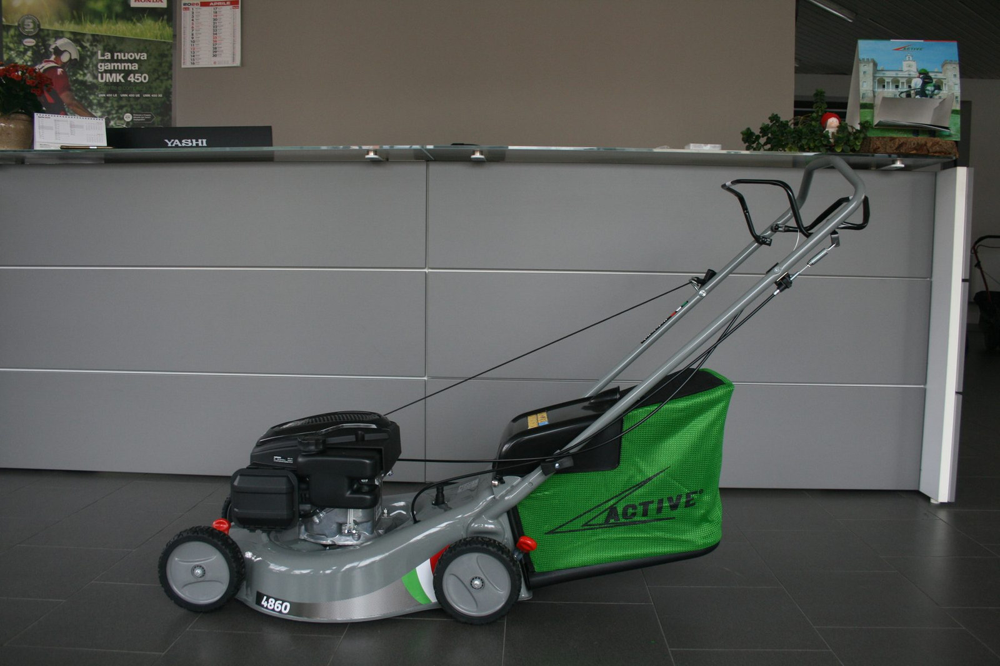
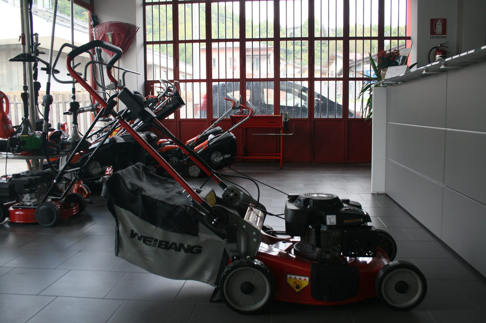
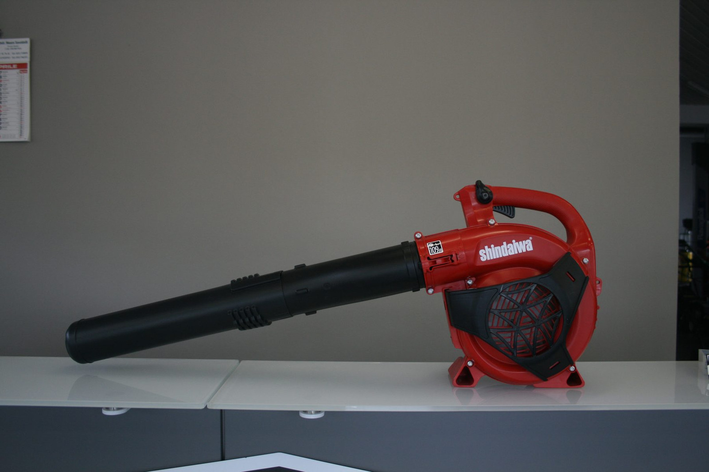

Non è una storia che parte dal negozio.
Comincia molto prima.
Sui banchi, sulle mani, sui motori di altri.
nelle mani
negozio nuovo
a memoria

Le mani imparano
prima della testa.
Il mestiere non si studia: si rovina nei guanti. Dieci anni passati su banchi di altre officine, a smontare motori che non erano nostri, a capire perché una catena saltava e una candela si sporcava sempre allo stesso modo.
Quando apriamo nel 2026 non partiamo da zero. Partiamo da un decennio di errori già fatti, e di motori già rimessi insieme.

Perché il verde,
non altro.
Motori d'auto te li portano a centinaia, ma una motosega torna in officina con una storia. Chi taglia legna a novembre, chi pota a marzo, chi falcia un campo che era di suo padre.
Abbiamo scelto questo angolo del mestiere per una ragione semplice: gli attrezzi del verde tornano sempre alle persone, mai a un cantiere anonimo.

Sette filosofie,
nel banco.
Stihl per la motosega, Active per il decespugliatore italiano, Oleo-Mac per il pro, Kress per i robot e batterie, Shindaiwa per il forestale, Ligier per le microcar, motori Honda. Sei marchi, sei filosofie.
La differenza non la fa il logo: la fa sapere quale candela monta, quale lubrificante chiede, quale ricambio si trova in 48 ore e quale invece tocca aspettare una settimana.

Cene non è
scelta a caso.
La valle Seriana ha bosco da tagliare, prati da falciare, vigne da potare. Ma non ha più una manciata di officine vere, di quelle che ti riparano una motosega senza fare la spedizione in Germania.
Aprire qui, in Via U. Bellora 73, vuol dire scegliere di stare vicini al tipo di lavoro che capiamo: quello che parla ancora con le mani.
2026.
Apriamo.
Lo showroom è pronto: vetrina sulla strada, banco in officina, ricambi a portata di mano. Cinquecento prodotti in negozio, sette marchi in catalogo, due famiglie di clienti — privati e professionisti.
Non siamo l'officina del nonno, e nemmeno quella di Amazon. Siamo quello che mancava in mezzo: un posto dove chiedere "questa serve davvero a me?" prima di comprare.

Vendiamo solo
ciò che sapremo riparare.
La macchina che vendiamo è una macchina che sappiamo riparare. Anche fra dieci anni. Anche se nel frattempo cambiano norme, batterie, software.
Non vendiamo strumenti che scadono. Vendiamo strumenti che durano. Il resto è solo come confezioniamo questa cosa qui.
Vieni a trovarci
Il resto,
te lo raccontiamo qui.
Se vuoi sentire la storia raccontata bene, ti tocca venire in negozio.
Magari porta con te una macchina da far ripartire.